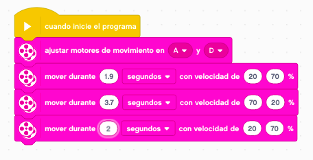
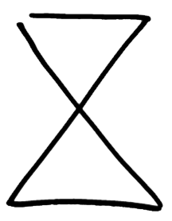

Ya sabemos como mover nuestro robot. Ahora nos toca afianzar lo que hemos aprendido.
Vamos a realizar tres ochos de distinto tipo para aplicar los tres tipos de giro.
El primero se trata de un ocho redondo en el que aplicaremos el giro en curva para poder realizarlo. El
número máximo de giros a utilizar es de tres.
¿Serías capaz de hacerlo con solo dos giros? Inténtalo.
El segundo ocho será como la imagen de un reloj de arena. En este caso aplicaremos el giro sobre sí mismo (una rueda hacia delante y otra hacia atrás). El máximo número de movimientos que podemos realizar es de 4 avances en recto y otros 4 giros.

¿Serías capaz de hacerlo con solo 3 giros y 3 rectas? Inténtalo utilizando las repeticiones (bucles).
Por último, haremos un ocho digital en el que utilizaremos los giros pibotando sobre una rueda (parando una rueda). El máximo número de movimientos que podemos realizar es de 8 avances en recto y otros 8 giros.

¿Serías capaz de hacerlo con solo 3 giros y 3 rectas? Inténtalo.